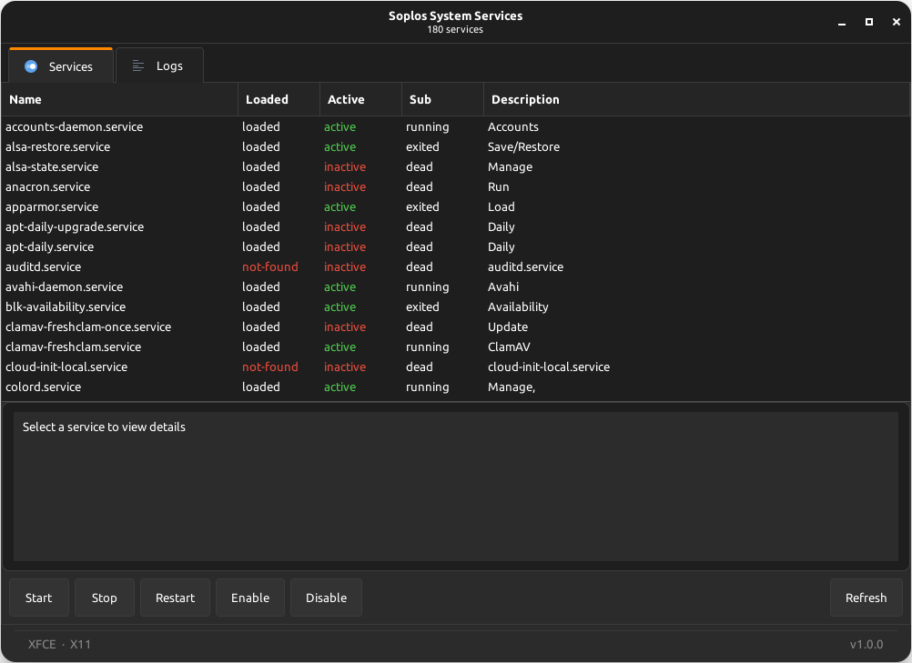
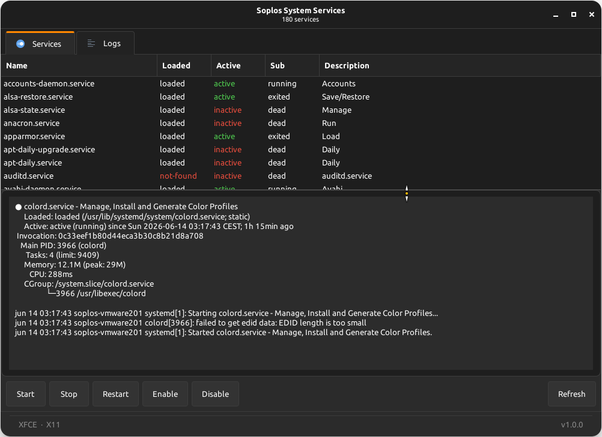
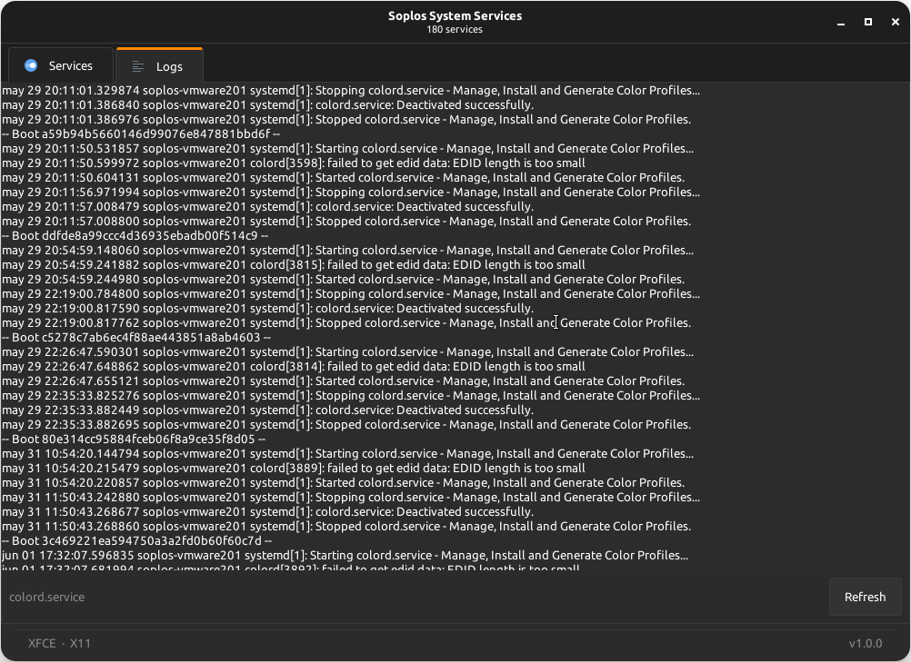

ES
ES FR
FR PT
PT DE
DE IT
IT RO
RO RU
RUOverview
Soplos System Service is a GTK3 graphical front-end for systemd. It provides a two-tab interface — Services and Logs — with a CSD HeaderBar, Soplos-standard footer showing the Desktop Environment and display protocol, and a pulse-mode progress bar during listing and operations. The dark or light theme is detected before pkexec elevation and forwarded via SOPLOS_COLOR_SCHEME, ensuring correct colors when running as root under XFCE, KDE or GNOME.
Services Tab
The Services tab lists all systemd units in a sortable TreeView with color-coded status rows and context-aware action buttons.
- Color-coded status: Active services are shown in green, failed and not-found units in red, making the state of every service immediately visible at a glance.
- Smart action buttons: Start, Stop, Restart, Enable and Disable buttons are activated or greyed out automatically based on the current state of the selected service. All controls remain disabled until a service is selected.
- Sortable columns: Click any column header to sort the list by unit name, load state, active state or sub-state.
Logs Tab
The Logs tab displays the journalctl output for the selected service in a monospace text view. Select a service in the Services tab and switch to Logs to read its journal entries in real time.
- Per-service journal: Fetches the journalctl output scoped to the selected unit via
journalctl -u <service>. - Monospace display: Log output is rendered in a fixed-width font for easy reading of timestamps, process names and log messages.
Screenshots


